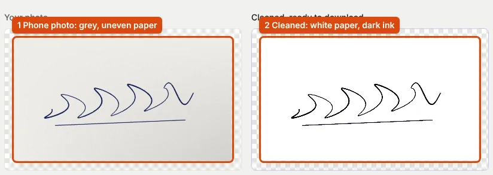

Signature Images for Online Forms, and How They Differ from a Digital Signature
"Upload signature" means a picture of your handwritten signature. Here is what SSC, IBPS, UPSC and NEET ask for, and how to make one that passes.
A signature image is not a digital signature
Exam and job forms ask you to "upload signature": a picture of your handwritten signature. A digital signature is something else. The Controller of Certifying Authorities explains that a Digital Signature Certificate is issued by a licensed Certifying Authority (CCA: How to get a DSC), and that there is no "specimen" digital signature, because "The Digital signature changes with content of the message" (CCA: Digital Signature). Electronic signatures are recognised under Section 5 of the Information Technology Act, 2000, and eSign is "an online electronic signature service" for signing a document (CCA: eSign).
You need a DSC for filings that ask for one, such as the DSC route of the online PAN application. For an exam or job form that says "upload signature", you need an image, and the rest of this page is about making a good one.
What exam notices say about the signature
| Exam | Rule |
|---|---|
| SSC | JPEG, 10–20 KB, about 6.0 × 2.0 cm (CGL 2026, para 9.6); "horizontally aligned" (GD 2026); fill "at least 80% of the box" (advisory) |
| IBPS | 140 × 60 px, 10–20 KB, "on white paper with Black Ink pen", "NOT IN CAPITAL LETTERS" (CRP PO/MT-XVI) |
| UPSC | Three signatures one below the other, black ink, plain white paper, 20–100 KB, 350–500 px (UPSC instructions) |
| NEET (UG) 2026 | JPG/JPEG, 10–100 KB; no ink or paper rule in the 2026 bulletin (bulletin, p. 16) |
| PAN (DSC route) | JPEG, colour, 200 DPI, 2 × 4.5 cm, max 10 KB (Protean) |
Two rules recur. Black ink on plain white paper is asked for by IBPS and UPSC. And the signature must be the one you will sign on exam day: IBPS disqualifies an applicant whose signature on the attendance sheet "does not match the signature uploaded".
Paper, pen and photo
- Paper: plain white, unlined. Ruled lines and creases turn into dark streaks.
- Pen: black ink with a medium tip. Faint strokes break up when the image is reduced to a small size.
- Size on paper: sign large. SSC's advice is to draw a box, sign inside it so the signature fills most of it, and crop to the box.
- Photo: daylight from the side, phone level above the paper, no shadow across it. See phone document scans.
Clean, crop and size
A phone photo of white paper is grey or yellow. The signature cleaner turns the paper white and the ink dark with two sliders: raise paper whiteness until the background is clean, and lower it again if thin strokes start to vanish; raise ink darkness for faint strokes. Check the thinnest stroke at full size.

Cleaning also makes the file smaller. Our 1600 × 900 px test photo came out of the cleaner as a 46.7 KB JPEG. Resized to 300 × 100 px it was 8.0 KB before cleaning and 6.3 KB after; at SSC's 709 × 236 px it needed quality 0.89 to fit 20 KB uncleaned, but fitted at 0.95 once cleaned (17.5 KB).
Then open the cleaned file in the resizer, choose your exam's signature preset or enter its size, and crop close to the ink. A small signature often comes out under a minimum: our 140 × 60 px version was 3.1 KB against IBPS's 10 KB minimum, and the resizer padded it without changing the picture.
Common mistakes
- Signing in capital letters where the notice forbids it (IBPS).
- A tiny signature in a large white image: SSC's "miniature" rejection.
- Saving as PNG when the form asks for JPEG.
- Stretching a wide signature into a square box. Crop to the target shape instead.
- A different signature on each form. Keep one reference signature and use it everywhere.
If a portal still refuses the file, see photo upload errors and fixes.
Sources
- Controller of Certifying Authorities: How to get a Digital Signature Certificate
- Controller of Certifying Authorities: Digital Signature
- Controller of Certifying Authorities: eSign
- The Information Technology Act, 2000 (India Code), Section 5
- SSC: Advisory to candidates with respect to photo and signatures, 15 August 2024
- IBPS: CRP PO/MT-XVI notification, Annexure III
- UPSC: Instructions for Uploading the Photo & Signature, p. 5
Measurements on this page come from running ApplyReady's own tools on the synthetic test images described in the editorial policy. Found a mistake? Report an error.